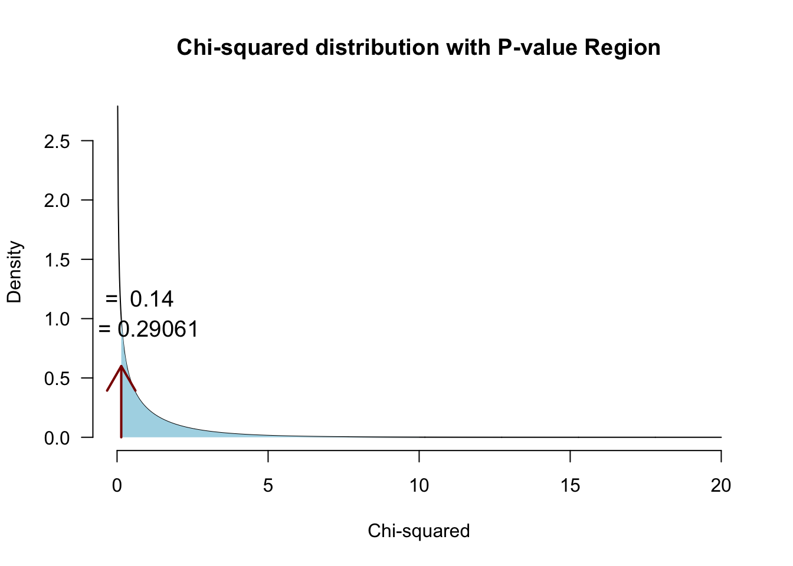

\(\chi^2\) test
Relation between categorical variables
\(\chi^2\) test
A “chi-squared test”, also written as \(\chi^2\) test, is any statistical hypothesis test wherein the sampling distribution of the test statistic is a chi-squared distribution when the null hypothesis is true. Without other qualification, ‘chi-squared test’ often is used as short for Pearson’s chi-squared test.
Chi-squared tests are often constructed from a Lack-of-fit sum of squared errors. A chi-squared test can be used to attempt rejection of the null hypothesis that the data are independent.
Source: wikipedia
\(\chi^2\) test statistic
\(\chi^2 = \sum \frac{(\text{observed}_{ij} - \text{model}_{ij})^2}{\text{model}_{ij}}\)
Contingency table
\(\text{observed}_{ij} = \begin{pmatrix} o_{11} & o_{12} & \cdots & o_{1j} \\ o_{21} & o_{22} & \cdots & o_{2j} \\ \vdots & \vdots & \ddots & \vdots \\ o_{i1} & o_{i2} & \cdots & o_{ij} \end{pmatrix}\)
\(\text{model}_{ij} = \begin{pmatrix} m_{11} & m_{12} & \cdots & m_{1j} \\ m_{21} & m_{22} & \cdots & m_{2j} \\ \vdots & \vdots & \ddots & \vdots \\ m_{i1} & m_{i2} & \cdots & m_{ij} \end{pmatrix}\)
\(\chi^2\) distribution
The \(\chi^2\) distribution describes the test statistic under the assumption of \(H_0\), given the degrees of freedom.
\(df = (r - 1) (c - 1)\) where \(r\) is the number of rows and \(c\) the amount of columns.
Example
The numerology of gender: gendered perceptions of even and odd numbers
Experiment

Data
Calculating \(\chi^2\)
observed <- table(results[, c("Association", "Type")])
observed Type
Association Even Odd
Feminine 103 48
Masculine 37 92\(\text{observed}_{ij} = \begin{pmatrix} 103 & 48 \\ 37 & 92 \\ \end{pmatrix}\)
Calculating the model
\(\text{model}_{ij} = E_{ij} = \frac{\text{row total}_i \times \text{column total}_j}{n }\)
n <- sum(observed)
totEven <- colSums(observed)[1]
totOdd <- colSums(observed)[2]
totFem <- rowSums(observed)[1]
totMasc <- rowSums(observed)[2]
addmargins(observed) Type
Association Even Odd Sum
Feminine 103 48 151
Masculine 37 92 129
Sum 140 140 280Calculating the model
\(\text{model}_{ij} = E_{ij} = \frac{\text{row total}_i \times \text{column total}_j}{n }\)
modelPredictions <- matrix( c((totFem * totEven) / n,
(totFem * totOdd) / n,
(totMasc * totEven) / n,
(totMasc * totOdd) / n), 2, 2, byrow=T
)
modelPredictions [,1] [,2]
[1,] 75.5 75.5
[2,] 64.5 64.5\(\text{model}_{ij} = \begin{pmatrix} 75.5 & 75.5 \\ 64.5 & 64.5 \\ \end{pmatrix}\)
observed - model
observed - modelPredictions Type
Association Even Odd
Feminine 27.5 -27.5
Masculine -27.5 27.5Calculating \(\chi^2\)
\(\chi^2 = \sum \frac{(\text{observed}_{ij} - \text{model}_{ij})^2}{\text{model}_{ij}}\)
# Calculate chi squared
chi.squared <- sum((observed - modelPredictions)^2 / modelPredictions)
chi.squared[1] 43.48272Testing for significance
\(df = (r - 1) (c - 1)\)
df <- (2 - 1) * ( 2 - 1)
library('visualize')
visualize.chisq(chi.squared, df, section='upper')
Fisher’s exact test
Calculates exact \(\chi^2\) for small samples, when the \(\chi^2\)-distribution does not yet suffice.
Calculate all possible permutations.
- Cell size < 5
Yates’s correction
For 2 x 2 contingency tables, Yates’s correction is to prevent overestimation of statistical significance for small data (at least one cell of the table has an expected count smaller than 5). Unfortunately, Yates’s correction may tend to overcorrect. This can result in an overly conservative result.
\(\chi^2 = \sum \frac{ ( | \text{observed}_{ij} - \text{model}_{ij} | - .5)^2}{\text{model}_{ij}}\)
# Calculate Yates's corrected chi squared
chi.squared.yates <- sum((abs(observed - modelPredictions) - .5)^2 / modelPredictions)
chi.squared.yates[1] 41.91591visualize.chisq(chi.squared.yates, df, section='upper')Likelihood ratio
Alternative to Pearson’s \(\chi^2\).
\(L \chi^2 = 2 \sum \text{observed}_{ij} ln \left( \frac{\text{observed}_{ij}}{\text{model}_{ij}} \right)\)
# ln is natural logarithm
ll.ratio <- 2 * sum(observed * log(observed / modelPredictions) ); ll.ratio[1] 44.7188visualize.chisq(ll.ratio, df, section='upper')Standardized residuals
\(\text{standardized residuals} = \frac{ \text{observed}_{ij} - \text{model}_{ij} }{ \sqrt{ \text{model}_{ij} } }\)
(observed - modelPredictions) / sqrt(modelPredictions) Type
Association Even Odd
Feminine 3.164894 -3.164894
Masculine -3.424150 3.424150Effect size
Odds ratio based on the observed values
odds <- round( observed, 2); odds Type
Association Even Odd
Feminine 103 48
Masculine 37 92\(\begin{pmatrix} a & b \\ c & d \\ \end{pmatrix}\)
\(OR = \frac{a \times d}{b \times c} = \frac{103 \times 92}{48 \times 37} = 5.3355856\)
Odds
Type
Association Even Odd
Feminine 103 48
Masculine 37 92The odd and even ratio of masculinity and the ratio of femininity
- Feminine \(\text{Odds}_{EO} = \frac{ 103 }{ 48 }\) = 2.1458333
- Masculine \(\text{Odds}_{EO} = \frac{ 37 }{ 92 }\) = 0.4021739
In the feminine responses, there are +- 2.15 times as many even numbers than odd numbers. In the masculine responses, there are +- 0.4 times as many even numbers than odd numbers.
Odds
Type
Association Even Odd
Feminine 103 48
Masculine 37 92Alternatively, we can look at the ratio’s of masculine vs feminine for even and odd numbers:
- Even \(\text{Odds}_{FM} = \frac{ 103 }{ 37 }\) = 2.7837838
- Odd \(\text{Odds}_{FM} = \frac{ 48 }{ 92 }\) = 0.5217391
For the even numbers, there are +- 2.78 times as many feminine associations than masculine associations. For the odd numbers, there are +- 0.52 times as many feminine associations than masculine associations.
Odds ratio
Is the ratio of these odds.
\(OR = \frac{\text{feminine}}{\text{masculine}} = \frac{2.1458333}{0.4021739} = \frac{\text{even}}{\text{odd}} = \frac{2.7837838}{0.5217391} = 5.3355856\)
For this data, even numbers received the feminine association +- 5.34 times more often than odd numbers received the feminine association. The odds ratio also accounts for the scores in the other condition: we do not only take into account the femininity of the odd numbers, but also the femininity of the even numbers.